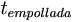
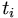

De: La Frikipedia, la enciclopedia extremadamente seria.
De: La Frikipedia, la enciclopedia extremadamente seria. De: La Frikipedia, la enciclopedia extremadamente seria.
No confundir con el Principio de Incertidumbre a secas.
El Principio de incertitumbre de Heisenberg, o simplemente Principio de Heisenberg (en honor a su formulador y que al igual que Jesulín de Ubrique o Carmen de Mairena quedo marcado por un gentilicio), se puede obtener de forma natural a partir de los mil trescientos millones cuatrocientos sesenta y nueve mil quinientos treinta y dos elevado al cubo y a tomar por culo dogmas derivados de los 7 postulados de la Física Cuántica. El principio es de aplicación únicamente en el intérvalo temporal que separa la finalización, en principio exacta, de un determinado examen y la posterior aparición de la correspondiente calificación (que viene justo después de los entrenamientos libres del sábado), y de ahí lo de incertidumbre. Dicha abstracción matemática debe su origen al físico cretense Principio, pero que emigró al entonces pequeño poblado bábaro de Heisenberg (Alemania septentrional antes de la unificación) por allá en el 1920. Como en tantos otros casos, se esperó a la muerte del científico para dar credibilidad y nombre al susodicho nuevo concepto físico, al parecer crucial para la correcta harmonía impropia de la física (y el físico), estudiante de Física con no otro objetivo que el de llegar a presentar la sección meteorológica de un canal autonómico cualquiera.
El principio de incertidumbre de Heisenberg dice que mientras mayor sea la presición con la que se realiza una medida, mayor es el error cometido en ella. Esto no solo tiene implicaciones en el campo cuantico, tambien tiene importantes imlicaciones en el mundo macroscópico como veremos mas adelante.
Aviso para incautos: personas que no hayan superado la E.G.B./E.S.O./Bachillerato/C.O.U. o que hayan aprovado la teórica del carné de conducir por aburrimiento ya de la DGT, abstenerse de continuar leyendo. Los autores no se hacen responsables de las posibles apoplegias cerebrales causadas por el sobresfuerzo mesoneuronal sináptico intrínseco a la asimilación de las abstracciones matemáticas a continuación expuestas.
Y he aquí el hijo de la criatura. Dado un ser inteligente cualquiera capaz de resolver un examen en el mundo real (el otro Mundo Mejor queda por tanto excluido), la gran de de Princicpio puede calcularse como:
Sacando factor común y tomando el logarítmo neperiano de puede obtenerse además una estimación de la nota no ponderada del individuo considerado, , definida entre 0-9.9 periódico (la escala no llega a 10, porque uno de los colorarios del Principio de incertidumbre de Heisenberg establece que dicha calificación contradice las leyes de conservación de la naturaleza, quedando, por tanto, únicamente reservada a Chuck Norris). Puede demostrarse (tras lo cual el señor Principio la palmó, de apoplegia, cuesta de creer pero sí, carecía de los requisitos expuestos en el Aviso para incautos) que:
donde  es el tiempo invertido estudiando (en lústros);  el tiempo invertido jugando a la Play Station durante el período de estudio (en picosegundos), el subíndice i corre para los diferentes modelos existentes de la videoconsola: PSP, PS2 y PS3; y  es un parámetro complejo adimensional que engloba tanto el grado de copiado como de chuletería empleado durante el examen. La obtención de se logra mediante simulación de Monte Carlo, no pudiendo superar en ningún caso el valor máximo de 10. Nótese que, dadas las unidades que deben considerarse para y , el cuociente entre estas dos magnitudes tiende a 0. Así mismo, nunca puede tomar el valor 0, puesto que al dividir por 0 tiende a infinito, lo que no puede ser, ya que según hemos quedado el valor máximo de pH no puede superar jamás el valor 10. Por motivos históricos, se acostumbra a emplear el término ácido para valores bajos de , y el término básico para valores altos, reservándose el término neutro para
es un parámetro complejo adimensional que engloba tanto el grado de copiado como de chuletería empleado durante el examen. La obtención de se logra mediante simulación de Monte Carlo, no pudiendo superar en ningún caso el valor máximo de 10. Nótese que, dadas las unidades que deben considerarse para y , el cuociente entre estas dos magnitudes tiende a 0. Así mismo, nunca puede tomar el valor 0, puesto que al dividir por 0 tiende a infinito, lo que no puede ser, ya que según hemos quedado el valor máximo de pH no puede superar jamás el valor 10. Por motivos históricos, se acostumbra a emplear el término ácido para valores bajos de , y el término básico para valores altos, reservándose el término neutro para
Al Principio de incertidumbre de Heisenberg le sigue el Principo del Cabreo, en caso de que el no iguale o supere el valor de 5 o el Principio Vacacional en caso contrario, activándose además automáticamente un mecanismo psicológico de defensa conocido como reseteado de la memoria.
Como se sabe de la definición, es imposible realizar una medida exacta, sin introducir un error en ella. Tenemos algunos ejemplos:
Medidas de los pechos y la cintura: Para realizar una medida precisa en este caso se requiere aumentar la presión con la que se ajusta la cinta métrica para entrar mejor en contacto con la piel, de modo que se introduce un error en la medida debido a la deformacion de las partes blandas del cuerpo.
Apagado de un viejo ventilador de techo a 3 velocidades: está demostrado que en los viejos ventiladores de techo, esos que se demoran 5 minutos en detenerse completamente, el indice de fracasos en apagarlo correctamente al primer intento es del 50%. Esto es debido a la incertidumbre de saber si la velocidad actual es la segunda o la tercera, de este modo se termina tirando dos veces la cuerda, dejando el ventilador en la primera velocidad en lugar de apagarlo.
Matar un mosquito que zumba en nuestros oidos mientras dormimos: en este caso tenemos una posición aproximada del mosquito, y en condiciones normales deberiamos poder matarlo, pero al intentarlo introducimos un error en el calculo de su posición ( debido al espanto del mosquito ante nuestra reacción ), de este modo se mantiene contante la relación:
Donde p es la probabilidad de matar al mosquito y x es la posición estimada del mosquito.
| | |||
|
Materia
Magnitudes
Mecánica
Cinética y Dinámica
Energía
Física Cuántica y Nuclear
Científicos
|
Autor(es):